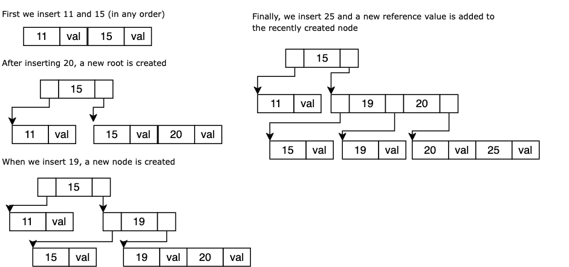

Designing Data Intensive Applications
- Martin Kleppmann
Table of Contents
Part I: Foundations
Chapter 1: Reliable, Scalable and Maintainable Applications
Reliability
The system should continue to work correctly (performing the correct function at the desired performance) even in the face of adversity
- Fault vs Failure
- A fault is usually defined as one component of the system deviating from its spec, whereas a failure is when the system as a whole stops providing the required service to the user.
- Fault-tolerance
- A system where faults do not produce failures
- Hardware errors: Disks die, electricity goes down. Solution: redundancy. There is a move towards systems that can tolerate the loss of entire machines, by using software fault-tolerance techniques in preference to hardware redundancy.
- Software errors: It is unlikely that a large number of hardware components will fail at the same time. But that's not true for software errors.
- Human errors: The most common.
To avoid all this:
- Test thoroughly at all levels
- Keep a fully-featured non-production sandbox environments
- Make it fast to roll back configuration changes
- Set up detailed and clear monitoring
Scalability
As the system grows (in data volume, traffic volume or complexity), there should be reasonable ways of dealing with that growth
Describe load: First, we need to succinctly describe the current load on the system; only then can we discuss growth questions: what happens if our load doubles?
Twitter example: The distribution of followers per user, weighted by how often those users tweet, is a key load parameter for discussing scalability, since it determines the fan-out load.
In batch-processing we care about throughput. In online systems, the response time of a service is usually more important.
Response time is not just a single number, but a distribution of values that you can measure. Commonly, we measure average, the arithmetic mean. Usually it is better to use percentiles.
The median (percentile 50) is a good metric if you want to know how long users typically have to wait. In order to figure out how bad your outliers are, you can look at higher percentiles: the 95th, 99th and 99.9th percentile are common. Xth percentile = Y ms means that X% of thxsee requests will perform better than Y ms.
Percentiles are often used in service level objectives (SLOs) and service level agreements (SLAs), contracts that define the expected performance and availability of a service.
An architecture that is appropriate for one level of load is unlikely to cope with ten times that load.
The architecture of systems that operate at large scale is usually highly specific to the application — there is no such thing as a generic, one-size-fits-all scalable architecture
Nevertheless, there are familiar patterns.
Maintainability
Software engeneers will continuosly work in the application, they should be able to it productevely deal with new changes
Majority of the cost of software is not in its initial development, but in its ongoing maintenance
- Operability: provide visibility with monitoring, good support for automation and integration with standard tools, avoid dependency on individual machines, good documentation, good default behavior, with the ability to override the defaults, self-healing where appropriate
- Simplicity: good abstractions
- Evolvability: making changes easy
Chapter 2: Data Models and Query Languages
Data models directly influences how we think about the problem that we are solving.
On data systems, the representation defines how the data can be queried, searched, manipulated and processed. There are many different kinds of data models, and every data model embodies assumptions about how it is going to be used.
Relational vs. document databases
When it comes to representing many-to-one and many-to-many relationships, relational and document databases are not fundamentally different: in both cases, the related item is referenced by a unique identifier, which is called a foreign key in the relational model, and a document reference in the document model.
The main differences are mostly related to handling concurrency or their fault-tolerance properties, as we will see in the following chapters. If we only focus on data model, the benefits are tied to the domain
With a SQL model, if data is stored in a relational tables, an awkward translation layer is needed, this is called impedance mismatch.
JSON model reduces the impedance mismatch and the lack of schema is often cited as an advantage, but this is not always the case, as there are also problems with JSON as a data encoding format.
Graph-like data models
If many-to-many relationships are very common in your application, it becomes more natural to start modelling your data as a graph.
Well-known algorithms can operate on these graphs, like the shortest path between two points, or popularity of a web page.
There are several ways of structuring and querying the data. The property graph model (implemented by Neo4j, Titan, and Infinite Graph) and the triple-store model (implemented by Datomic, AllegroGraph, and others). There are also three declarative query languages for graphs: Cypher, SPARQL, and Datalog.
Chapter 3: Storage and retrieval
We tend to work with a lot of layers of abstractions. Performance improvement is about removing the abstractions for a bit. In order to tune a storage engine to perform well on your kind of workload, you need to have a rough idea of what the storage engine is doing under the hood. We will examine two families of storage engines: log-structured storage engines, and page-oriented storage engines such as B-trees.
Data Structures that Power Your Database
- Append Only logs
First let's think of the most basic database we can implement. Let it be a key-value store with two functions:
dbSetanddbGet.#!/bin/bash dbSet () { echo "$1,$2" >> database } dbGet () { grep "^$1," database | sed -e "s/^$1,//" | tail -n 1 }
Insertion is just appending the pair key, value to a file. Selection is just a scan through the whole file, searching by key, and retrieving the last entry (in case the was an overwrite)
Despite the basic capacities of this db, we can see that insertions are super efficient
O(1), whiledbGetfunction has a quite terrible performanceO(n).In order to efficiently find the value for a particular key in the database, we need a different data structure: an index. An index is an additional structure that is derived from the primary data. Any kind of index usually slows down writes, because the index also needs to be updated every time data is written.
- Hash indexes
Key-value stores are quite similar to the dictionary type that you can find in most programming languages, and which is usually implemented as a hash map. So the simplest addition to our first aproximation to a databse will be keeping a hash table in memory where each key is mapped to a pointer to a db offset. So now insertion consists of not only appending the key, value pair to the file, but also updating the in-memory hash to keep the offset of the data you just wrote. Selection is just following the db pointer stored in the hash map.
One problem with this approach is the requirement that all the keys fit in main memory. This storage is suitable where the number of key is low while the number of updates is high.
- Hash indexes + Compaction
Another issue of an append only log like this is running out of disk space. A good solution for this is to break the log into segments of a certain size and perform compaction on these segments, this is, throwing away duplicate keys in the log, keeping the most recent update. Segment compaction can be done in a background thread so we can still serve read and write requests as normal and when the process is complete, switch to the newly generated segment.
Each segment will have its own hash table in memory. In order to find the value for a key, we start by searching the most recent segment's hash map. If it's not there, continue with the second most recent, and so on.
Problems on a real implementation
- File format
- CSV is not the best format for a log. It’s faster and simpler to use a binary format which first encodes the length of a string in bytes, followed by the raw string (without need for escaping).
- Deleting records
- If you want to delete a key and its associated value, you have to append a special deletion record to the data file (sometimes called a tombstone).
- Crash recovery
- If the database is restarted, the in-memory hash maps are lost. Each segment’s hash map can be restored, however, that might take a long time if the segment files are large, which would make server restarts painful. This can be speeded up by storing a snapshot of each segment’s hash map on disk, which can be loaded into memory quicker.
- Partially written records
- The database may crash at any time, including halfway through appending a record to the log. Checksums can be included to allow such corrupted parts of the log to be detected and ignored.
- Concurrency control
- As writes are appended to the log in a strictly sequential order, a common implementation choice is to have only one writer thread. And as our log is append-only, there can be several concurrently reader threads.
Append-only Log PROs
- Sequential writes are much faster than random writes.
- Concurrency and crash recovery are easier when segments are immutable.
- No fragmentation of data.
Append-only Log CONs
- The hash tables must fit in memory
- Range queries are not efficient
This simple approach is used in Bitcask
- Hash indexes
- SSTables and LSM-trees
Let's take our append-only logs and make a simple change to it: let's require that the sequence of keys inside each segment is sorted by key. Does this imply that writes are not sequential anymore? NO. How? Using memory. Maintaining a sorted structure on disk is possible, but maintaining it in memory is much easier. There are many data structures that ensures this: AVL trees, RB trees.
So now it works as follows:
- When a write comes in, add to a an in-memory balanced tree data-structure (called memtable).
- When the memtable gets too big, write it out to disk as an SSTable (A key value pair list sorted by key, and where each key appears only once). The new SSTable becomes the most recent disk segment.
- In order to serve read requests, try to find the key in the memtable, then in the most recent segment and so on.
- From time to time, run a merging and compaction process (much efficient now that the keys are sorted).
Additions:
- A fault tolerance mechanism can be keeping a separate log on disk (Write ahead log) not sorted, but just for the purpose of recovering in case of crash.
- This algorithm can be slow when looking up keys that do not exist in the DB. Possible heuristic: Bloom filter.
This approach is used in LevelDB and RocksDB and also Lucene uses it for its term dictionary.
Similar storage engines are used in Cassandra and HBase, both of which were inspired by Google’s Bigtable paper (which introduced the terms SSTable and memtable).
Originally this indexing structure was described by Patrick O’Neil et al. under the name Log-Structured Merge-Tree (LSM-Tree)
There are also different strategies to determine the order and timing of how SSTables are compacted and merged. Mainly two: size-tiered and leveled compaction. In size-tiered compaction, tables are organized into tiers based on their size. Older tiers have less tables but bigger. Similar to 2048 game. Needs temp space for compaction, high space amplification. In leveled compaction, the key range is split up into smaller SSTables and older data is moved into separate "levels". Each key can only exist in one table per level. So it's optimized for reads. LevelDB and RocksDB use leveled compaction, HBase use size-tiered, and Cassandra supports both.
- B-Trees
The most widely-used indexing structure is quite different: the B-tree. Introduced in 1970, B-trees have stood the test of time very well. They remain the standard index implementation in almost all relational databases, and many non-relational databases use them too.
The log-structured indexes we saw earlier break the database down into variable-size segments, typically several megabytes or more in size, and always write a segment sequentially. By contrast, B-trees break the database down into fixed-size blocks or pages, traditionally 4 kB in size, and read or write one page at a time.
Each page can be identified using an address or location, which allows one page to refer to another. We can use this to construct a tree of pages.
One page is designated as the root of the B-tree. Each page contains k keys and k+1 references to other pages. For example
ref0 100 ref1 200 ref2 300 ref3 400 ref4 500 ref5 In this example, if we're looking for the key 254, we will first follow ref2 (because 254 is between 200 and 300). That will lead us to another page that might look like this
ref0 225 ref1 255 ref2 260 ref3 270 ref4 280 ref5 Then we will follow ref1 (because 254 is between 225 and 255) and that ref will lead us to a page that might look like this
225 val 235 val 236 val 254 val spare space In this case, we encounter a leaf page, containing individual keys and their values (or references to offsets where values can be found)
To modify a value, find the leaf page and just change the value. For insertion, let's take a look at the following example, where for simplicity we assumed a max number of 3 references can be hold in each page.

Figure 1: Insertion into B-trees
- B-tree optimizations
- Instead of overwriting pages and maintaining a WAL for crash recovery, some databases like LMDB use a copy-on-write scheme. A modified page is written to a different location, and a new version of parent pages in the tree is created, pointing at the new location. This also helps concurrency.
- Space can be saved by not storing the entire key, but abbreviating it. (ex. git btrees)
- Some implementations try to maintain pages near to each other. This is not a simple goal. This is easier for LSM-trees.
- Adding extra poiters to easily traverse the tree (like sibling pointers)
- Fractal trees
- B-trees vs LSM-trees
B-tree LSM-tree more mature promising higher throughput of random writes because they are turned into sequential writes faster for reads faster for writes compaction can interfere with with ongoing requests each key exists in exactly one place in the index(better for strong transactional semantics) keys might appear in many places - Multi-column indexes
The indexes discussed so far only map a single key to a value. That is not sufficient if we need to query multiple columns of a table (or multiple fields in a document) simultaneously. Multi-dimensional indexes are a more general way of querying several columns at once, A standard B-tree or LSM-tree index is not able to answer that kind of query efficiently.
Solutions:
- translate a two-dimensional location into a single number using a space-filling curve, and then to use a regular B-tree index
- R-trees (PostGIS implements geospatial indexes as R-trees using PostgreSQL’s Generalized Search Tree indexing facility)
- Fuzzy indexes
All the indexes discussed so far assume that you have exact data, and allow you to query for exact values of a key, or a range of values of a key with a sort order. What they don’t allow you to do is search for similar keys, such as misspelled words. Such fuzzy querying requires different techniques.
- LevelDB implements an in-memory index as a sparse collection of some of the keys.
- Lucene keeps an in-memory index as a finite state automaton over the characters in the keys, similar to a trie. This automaton can be transformed into a Levenshtein automaton, which supports efficient search for words within a given edit distance
- B-tree optimizations
- Keeping everything in memory
Disks have two significant advantages over main memory:
- durability: content is not erased on power off
- price: lower cost per gigabyte
As RAM becomes cheaper, the cost-per-gigabyte argument is eroded. This has led to the development of in-memory databases. Some are intended for caching use only(memcache), where it’s acceptable for data to be lost if a machine is restarted But other in-memory databases aim for durability, by writing a log of changes to disk, by writing periodic snapshots to disk, or by replicating the in-memory state to other machines. This kind of DBs
VoltDB, MemSQL and Oracle TimesTen are in-memory databases with relational model.
Counter-intuitively, the performance advantage of in-memory databases is not due to the fact that they don’t need to read from disk. Even a disk-based storage engine may never need to read from disk if you have enough memory, because the operating system caches recently used disk blocks in memory anyway. Rather, they can be faster because they can avoid the overheads of encoding in-memory data structures in a form that can be written to disk.
Transaction Processing vs. Analytics
In the early days of business data processing, a write to the database typically corresponded to a commercial transaction taking place. As databases expanded into areas that didn’t involve money changing hands, the term transaction nevertheless stuck, referring to a group of reads and writes that form a logical unit. Records are inserted or updated based on the user’s input. Because these applications are interactive, the access pattern became known as online transaction processing (OLTP).
Databases also started being used for data analytics, which has very different access patterns. Usually an analytic query needs to scan over a huge number of records, and to calculate aggregate statistics (such as count, sum or average). In order to differentiate this pattern of using databases from transaction processing, it has been called online analytic processing (OLAP).
| Transaction processing systems (OLTP) | Analytic systems (OLAP) | |
|---|---|---|
| Main read pattern | Small number of records per query, fetched by key | Aggregate over large number of records |
| Main write pattern | Random-access, low-latency writes from user input | Bulk import (ETL) or event stream |
| Primarily used by | End user via application | Internal analyst, for decision support |
| What data represents | Latest state of data (current point in time) | History of events that happened over time |
| Dataset size | Gigabytes to terabytes | Terabytes to petabytes |
OLTP systems are usually expected to be highly available and to process transactions with low latency, since they are often critical to the operation of the business. Database administrators are usually reluctant to let analists to run queries against it. A data warehouse, by contrast, is a separate database that analysts can query without affecting OLTP operations.
Data is extracted from OLTP databases (using either a periodic data dump or a continuous stream of updates), transformed into an analysis-friendly schema, cleaned up, and then loaded into the data warehouse. This process of getting data into the warehouse is known as Extract-Transform-Load (ETL). It turns out that the indexing algorithms discussed in the first half of this chapter work well for OLTP, but are not very good at answering analytic queries. The data model of a data warehouse is most commonly relational, because SQL is generally a good fit for analytic queries. There are many graphical data analysis tools which generate SQL queries, visualize the results, and allow analysts to explore the data (through operations such as drill-down and slicing and dicing). Many database vendors now focus on supporting either transaction processing or analytics workloads, but not both.
- Stars and snowflakes: schemas for analytics
Many data warehouses are used in a fairly formulaic style, known as a star schema (also known as dimensional modeling). The center of the star consists of a fact table, the primary table where the numerical performance measurements of the business are stored. Some of the columns in the fact table are attributes, such as the price at which the product was sold, and the cost of buying it from the supplier (allowing the profit margin to be calculated, etc. Other columns in the fact table are foreign key references to other tables, called dimension tables. Dimension tables are integral companions to a fact table. The dimension tables contain the textual descriptors of the business. As each row in the fact table represents an event, the dimensions represent the who, what, where, when, how and why of the event.
A variation of this template is known as snowflake schema, where dimensions are further broken down into sub-dimensions. Snowflake schemas are more normalized than star schemas, but in this case, star schemas are often preferred because they are simpler for analysts to work with.
Column oriented storage
Things we know about OLAP
- Fact tables are often over 100 columns wide
- They colect a lot of information, they have a lot of rows (trillions)
- Not many columns are accessed for analitics
In most OLTP databases, storage is laid out in a row-oriented fashion: all the values from one row of a table are stored next to each other. Document databases are similar: an entire document is typically stored as one contiguous sequence of bytes.
Even if an analitic query only involves a few columns, a row-oriented storage engine still needs to load all of those rows with all the columns from disk into memory, parse them, and filter out those that don’t meet the required conditions.
The idea behind column-oriented storage is simple: don’t store all the values from one row together, but store all the values from each column together instead. If each column is stored in a separate file, a query only needs to read and parse the columns used in the query.
For example, if we have the following fact table
| date_key | product_sk | store_sk | promotion_sk | net_price |
| 241102 | 1 | 2 | NULL | 12.99 |
| 241102 | 1 | 5 | 2 | 11.99 |
| 241102 | 1 | 5 | NULL | 12.99 |
| 241103 | 2 | 2 | NULL | 3.00 |
Then we will have 5 files
- date_key file contains: 241102,241102,241102,241103
- product_sk file contains: 1,1,1,2
- store_sk file contains: NULL,2,NULL,NULL
- net_price file contains: 12.99,11.99,12.99,3.00
As you can guess by looking at the example, column-oriented storage often is very well suited for compression. bitmap-indexed and run-length encoded
In a column store, it doesn’t necessarily matter in which order the rows are stored. It’s easiest to store them in the order in which they were inserted, since then inserting a new row just means appending to each of the column files. However, we can choose to impose an order, like we did with SSTables previously, and use that as an indexing mechanism.
The administrator of the database can choose the columns by which the table should be sorted, using their knowledge of common queries. For example, if queries often target date ranges, such as the last month, it might make sense to make date_key the first sort key.
Another advantage of sorted order is that it can help with compression of columns. If the primary sort column does not have many distinct values, then after sorting, it will have long sequences where the same value is repeated many times in a row.
A rule of thumb to decide the ordering of the columns to improve performance is:
- The columns you use most should be left-most.
- The column with lower cardinality should be left-most. Sort the columns from smallest cardinality to largest.
- Sort order in column storage
- If sorting of columns affects performace, so why not store the same data sorted in several different ways? Data needs to be replicated to multiple machines anyway, so that you don’t lose data if one machine fails. You might as well store that redundant data sorted in different ways, so that when you’re processing a query, you can use the version that best fits the query pat‐ tern.
- Writing to column-oriented storage
- Column-oriented storage, compression and sorting all help to make those read queries faster. However, they have the downside of making writes more difficult.
An update-in-place approach, like B-trees use, is not possible with compressed columns. If you wanted to insert a row in the middle of a sorted table, you would most likely have to rewrite all the column files. As rows are identified by their position within a column, the insertion has to update all columns consistently. Fortunately, we have already seen a good solution earlier in this chapter: LSM-trees. All writes first go to an in-memory store, where they are added to a sorted structure, and prepared for writing to disk. It doesn’t matter whether the in-memory store is row-oriented or column-oriented. When enough writes have accumulated, they are merged with the column files on disk, and written to new files in bulk.
- Aggregation: Data cubes and materialized views
- As discussed, data warehouse queries often involve an aggregation, such as COUNT, SUM, AVG, MIN or MAX in SQL. If the same aggregates are used by many different queries, it might be helpful to cache the results. One way of creating such a cache is a materialized view.
The difference between a materialized view and a regular view from relational dbs is that a materialized view is an actual copy of the query results, written to disk, whereas a virtual view is just a shortcut for writing queries.
When the underlying data changes, a materialized view needs to be updated, because it is a denormalized copy of the data. The database can do that automatically, but such updates make writes more expensive, which is why materialized views are not often used in OLTP databases.
Chapter 4: Encoding and Evolution
In this chapter we will look at several ways of turning data structures into bytes on the network or bytes on disk, this is encoding. We will see how the details of these encodings affects not only their efficiency, but more importantly also the architecture of applications, how they handle schema changes and how they support systems where old and new data and code need to coexist.
Formats for Encoding Data
Programs usually work with data in (at least) two different representations:
- In memory (data structures are optimized for efficient access and manipulation by the CPU)
- When you want to write data to a file, or send it over the network, you have to encode it as some kind of self-contained sequence of bytes (for example JSON)
We need some kind of translation between the two representations. We will call this encoding (even though serialization would be a better fit, we don't want the term to be confused with the term in the transactional context, see chapter 7.)
- Language specific
Many programming languages come with built-in support for encoding in-memory objects into byte sequences, but these are normally language specific (for example java.io.Serializable in java).
Efficiency (CPU time taken to encode or decode, and the size of the encoded structure) is also often an afterthought. For example, Java’s built-in serialization is notorious for its bad performance and bloated encoding. Also, to restore data in the same object types, the decoding process needs to be able to instantiate arbitrary classes. This is frequently a source of security problems.
- JSON, XML and binary variants
They are widely known XML is often criticised for being too verbose and unnecessarily complicated JSON’s popularity is mainly due to its built-in support by web browsers CSV is another popular language-independent format, albeit less powerful.
JSON, XML and CSV are textual formats, and thus somewhat human-readable, but they have some subtle problems:
- Ambiguity around the encoding of numbers and dealing with large numbers
- Support of Unicode character strings, but no support for binary strings. People get around this by encoding binary data as Base64, which increases the data size by 33%.
- There is optional schema support for both XML and JSON
- CSV does not have any schema
For data that is used only internally within your organization, you could choose a format that is more compact or faster to parse. JSON is less verbose than XML, but both still use a lot of space compared to binary formats. There are binary encodings for JSON (MesagePack, BSON, BJSON, UBJSON, BISON and Smile), similar thing for XML (WBXML and Fast Infoset).
But if look at the binary encoded version of the following JSON
{ "userName": "Martin", "favoriteNumber": 1337, "interests": ["daydreaming", "hacking"]}xsit has 66 bytes long, only a little less than 81, the original JSON without spaces. - Thrift and Protocol Buffers
Apache Thrift (Facebook) )and Protocol Buffers (Google) are binary encoding libraries that are based on the same principle.
- They have a definition language (Thrift calls it interface definition language (IDL)) to describe the schema. For example, in protoc:
message Person { required string user_name = 1; optional int64 favorite_number = 2; repeated string interests = 3; }- They come with a code generation tool that takes a schema definition like the one above, and produces classes that implement the schema in various programming languages.
- They both have binary encondings for data. Thrift has two different encoding protocols (called binaryProtocol and CompactProtocol) that will encode the avobe piece of json in 59 and 34 bytes respectively, protocol buffers encode the same piece of data in 33 bytes.
- Evolvability: Each field is identified by its tag number (the numbers 1, 2, 3 in the schemas above), and annotated with a datatype (e.g. string or integer). If a field value is not set, it is simply omitted from the encoded record. From this you can see that field tags are critical to the meaning of the encoded data. You can change the name of a field in the schema, since the encoded data never refers to field names, but you cannot change a field’s tag, since that would make all existing encoded data invalid.
For forward compatibility, if old code sees a piece of data written by new code, it can just ignore the field for unknown tags.
For backward compatibility, you can always add fields, but not make them required, it must be optional or have a default value, and you can never use the same tag number again.
- Avro
Apache Avro is another binary encoding format that is interestingly different from Protocol Buffers and Thrift. Avro also uses a schema to specify the structure of the data being encoded. It has two schema languages: one (Avro IDL) intended for human editing, and one (based on JSON) that is more easily machine-readable.
record Person { string userName; union { null, long } favoriteNumber = null; array<string> interests; }On the resulting encoded byte sequence, there is nothing to identify fields or their datatypes. To parse the binary data, you go through the fields in the order that they appear in the schema, and use the schema to tell you the datatype of each field. So you can only decode a piece of data correctly if the code reading the data is using the exact same schema as the code that wrote the data.
For evolvability, the key in avro model is having two schemas: the writer's schema and the reader's schema. The writer’s schema and the reader’s schema don’t have to be the same — they only need to be compatible. If a field on the writer’s side doesn’t have a matching field on the reader’s side, it is ignored. If a field on the reader’s side doesn’t have a matching field on the writer’s side, it is filled in with a default value declared in the reader’s schema. To maintain compatibility, you may only add or remove a field that has a default value.
In some programming languages, null is an acceptable default for any variable, but this is not the case in Avro: if you want to allow a field to be null, you have to use a union type. For example, union { null, long, string } field; indicates that field can be a number, or a string, or null.
But how does the reader know the writer’s schema with which a particular piece of data was encoded? Answer: depends on the context in which Avro is being used. For large files containing many rows a header containing the schema can be used; for databases, schemas and a version number can be kept; for sending records over a network connection the schema can be negotiated on setup.
- Dynamically generated schemas
- One advantage of Avro’s approach, compared to Protocol Buffers and Thrift, is that the schema doesn’t contain any tag numbers. This is useful for generating dynamic schemas, like for example to generate a file dump after a custom select query. This was the reason why avro was designed.
- Code generation
- Thrift and Protocol Buffers rely on code generation: after a schema has been defined, you generate code that implements the schema in a programming language of your choice. Of course this only makes sense in a statically typed language. Avro provides optional code generation for statically typed programming languages, but it can be used just as well without any code generation.
- Schemas
- Many data systems also implement some kind of proprietary binary encoding based on schemas. For example, most relational databases have a network protocol over which you can send queries to the database and get back responses. Those protocols are generally specific to a particular database, and the database vendor provides a driver (e.g. using the ODBC or JDBC APIs) which decodes responses from the database’s network protocol into in-memory data structures.
So some PROs of schemas over using JSON, XML, etc, are:
- They can be much more compact than the various “binary JSON” variants, since they omit field names from the encoded data.
- The schema acts as documentation, and because the schema is required for decoding, you can be sure that it is up-to-date
- Keeping a database of schemas allows you to check forward and backward compatibility of schema changes, before anything is deployed.
- It enables type-checking at compile time.
Modes of Data Flow
the most common ways how data flows between processes:
- via databases
- via calls to services (REST and RCP)
- via async message passing
- Data flow via databases
In a database, the process that writes to the database encodes the data, and the process that reads from the database decodes it. It might be the case that the reader is in a newer version, so backwards compatibility is clearly necessary here.
It’s common for several different processes to be accessing a database at the same time. This means that a value in the database may be written by a newer version of the code, and subsequently read by an older version of the code that is still running. Thus, forward compatibility is also often required for databases.
There one more thing to take into account: Say you add a field to a record schema, and the newer code writes a value for that new field to the database. Subsequently, an older version of the code reads the record, updates it, and writes it back. In this situation, the desirable behavior is usually for the old code to keep the new field intact, even though it couldn’t be interpreted. The encoding formats discussed above support such preservation of unknown fields, but sometimes you need to take care at an application level.
- Data flow via services: REST and RPC
There are two popular approaches to web services: REST and SOAP.
REST is not a protocol, but rather a design philosophy that builds upon the principles of HTTP. It emphasizes simple data formats, using URLs for identifying resources, and using HTTP features for cache control, authentication, and content type negotiation.
SOAP is an XML-based protocol for making network API requests. The API of a SOAP web service is described using an XML-based language called WSDL (the RESTful equivalent of WSDL is called open API. As WSDL is not designed to be human-readable, and as SOAP messages are often too complex to construct manually, users of SOAP rely heavily on tool support, code generation and IDEs.
RPC tries to make a request to a remote network service look the same as calling a function or method in your programming language, within the same process (this is called location transparency). But it's not. A local function call either returns a result, or throws an exception, or never returns. A network request has another possible outcome: it may return without a result, due to a timeout. If you retry a failed network request, it could happen that the requests are actually getting through, and only the responses are getting lost. In that retrying will cause the action to be performed multiple times, unless you build a mechanism for deduplication (idempotence) into the protocol. A network request is much slower than a function call, and its latency is also wildly variable.
Thrift and Avro come with RPC support included, gRPC is a RPC implementation using Protocol Buffers, Finagle also uses Thrift, and Rest.li uses JSON over HTTP. This new generation of RPC frameworks is more explicit about the fact that a remote request is different from a local function call. For example, results are wrapped in futures, gRPC supports streams.
REST seems to be the predominant style for public APIs. The main focus of RPC frameworks is on requests between services owned by the same organization, typically within the same datacenter.
When RPC is used for communication across organizational boundaries, the problem of compatibility arises. If a compatibility-breaking change is required, the service provider often ends up maintaining multiple versions of a service API side-by-side. There is no agreement on how API versioning should work. For RESTful APIs, common approaches are to use a version number in the URL, or in the HTTP Accept header. For services that use API keys to identify a particular client, another option is to store a client’s requested API version on the server, and to allow this version selection to be updated through a separate administrative interface
- Data flow via message passing
In between RPC and databases. They are similar to RPC in that a client’s message is delivered to another process with low latency. They are similar to databases in that the message is not sent via a direct network connection, but goes via an intermediary called a message broker. (also called a message queue or message-oriented middleware.
Advantages:
- acts as a buffer if the recipient is unavailable or overloaded, and thus improve system reliability
- it can automatically redeliver messages to a process that crashed, and thus prevent messages from being lost
- it avoids the sender needing to know the IP address and port number of the recipient
- it allows one message to be sent to several recipients
- decouples the sender from the recipient
The difference compared to RPC is that message-passing communication is usually one-way. It is possible for a process to send a response, but this would usually be done on a sepa‐ rate channel. This is what makes it asynchronous.
Part II: Distributed Data
In Part II, we move up a level and ask: what happens if multiple machines are involved in storage and retrieval of data? REASons why we might want to do this are:
- Scalability: When data volume grows, spread the load across multiple machines.
- Fault tolerance/high availability: If your application needs to continue working, even if one machine (or several) goes down, multiple machines will give you redundancy.
- Latency: You might want to have have servers at various locations worldwide, so users in different parts of the world can be served from a datacenter that is geographically close to them.
Possible architectures:
- shared-memory architecture: Many CPUs, many RAM chips and many disks can be joined together under one operating system, and a fast interconnect allows any CPU to access any part of memory or disk. (vertical scaling or scale up)
- shared-disk architecture: Uses several machines with independent CPUs and RAM, but stores data on an array of disks that is shared between the machines, connected via a fast network.
- shared-nothing architecture: In this approach, each machine or virtual machine running the database software is called a node. Each node uses its CPUs, RAM and disks independently. Any coordination between nodes is done at the software level, using a conventional network. (Horizontal scale or /scale
We will focus on shared-nothing architecture.
Chapter 5: Replication
As Mentioned, the reasons why we want to replicate data are:
- To keep data geographically close to your users (reduce latency)
- To allow the system to continue working even if some parts of the system have failed (increase availability)
- To scale out and thus increase read throughput.
The difficulty in replication lies in handling changes to replicated data, and that’s what this chapter is about. We will discuss three popular algorithms for replicating changes between nodes: single-leader, multi-leader and leaderless replication.
Single leader replication
- One of the replicas is designated the leader (also known as master or primary). Write requests to the database go to the leader, which first writes the new data to its local storage.
- The other replicas are known as followers (read replicas, slaves). Whenever the leader writes new data to its local storage, it also sends the data change to all of its followers as part of a replication log or change stream. Each follower takes the log from the leader and updates its local copy of the database in the designated order.
- Reads from the database can be queried either to the leader or to any of the followers.
Sync vs Async replication
On sync replication, leader waits for a confirmation from a follower before responding to the end user. This might delay write response time amd even block it because a follower is not responding. On the other hand, if the leader suddenly fails, we can be sure that the data is still available on the follower. That's why it is impractical for all followers to be synchronous. In practice, if you enable synchronous replication on a database, it usually means that one of the followers is synchronous, and the others are asynchronous. This guarantees that you have an up-to-date copy of the data on at least two nodes: the leader and one synchronous follower. This configuration is sometimes also called semi-synchronous.
Often, leader-based replication is configured to be completely asynchronous. In this case, if the leader fails and is not recoverable, any writes that have not yet been replicated to followers are lost. However, a fully asynchronous configuration has the advantage that the leader can continue processing writes, even if all of its followers have fallen behind.
Setting up new followers
From time to time, you need to set up new followers. How do you ensure that the new follower has an accurate copy of the leader’s data?
- Take a consistent snapshot of the leader’s database at some point in time — if possible, without taking a lock on the entire database.
- Copy the snapshot to the new follower node.
- The follower connects to the leader, and requests all data changes that happened since the snapshot was taken. This requires that the snapshot is associated with an exact position in the leader’s replication log.
Handling node outages
- Follower failure: catch-up recovery: On its local disk, each follower keeps a log of the data changes it has received from the leader. After a crash, a follower can ask the leader for the latests chages on the log and apply them.
- Leader failure: failover
- Determining that the leader has failed. If a node doesn’t respond for some period of time it is assumed to be dead
- Choosing a new leader. The best candidate for leadership is usually the replica with the most up-to-date data changes.
- Reconfiguring the system to use the new leader. Clients now need to send their write requests to the new leader.
If the old leader comes back, it might still believe that it is leader. The system needs to ensure that the old leader becomes a follower and recognizes the new leader.
In certain fault scenarios, it could happen that two nodes both believe that they are the leader. This situation is called split brain, and it is dangerous: if both leaders accept writes, and there is no process for resolving conflicts, data is likely to be lost or corrupted.
Discarding writes is especially dangerous if other storage systems outside of the database need to be coordinated with the database contents. For example, in one incident at GitHub, an out-of-date MySQL follower was promoted to leader. The database used an auto-incrementing counter to assign primary keys to new rows, but because the new leader’s counter lagged behind the old leader, it reused some primary keys that were previously assigned by the old leader. These primary keys were also used in a Redis store, so the reuse of primary keys resulted in inconsistency between MySQL and Redis, which caused some private data to be disclosed to the wrong users.
- Implementation of replication logs
- Statement-based replication
The leader logs every statement and send the log to its followers. On a relational db, the log constists of every INSERT, UPDATE or DELETE.
This type of replication has some problems:
Statements that depend on existing data, like auto-increments, must be executed in the same order in each replica. Statements with side effects may result on different results on each replica.
A solution to this is to replace any nondeterministic function with a fixed return value in the leader.
- Write-ahead log (WAL) shipping
The log is an append-only sequence of bytes containing all writes to the database. The leader can send it to its followers. This way of replication is used in PostgresSQL and Oracle.
The main disadvantage is that the log describes the data at a very low level (like which bytes were changed in which disk blocks), coupling it to the storage engine.
Usually is not possible to run different versions of the database in leaders and followers. This can have a big operational impact, like making it impossible to have a zero-downtime upgrade of the database.
- Logical log replication
A logical log for a relational database is usually a sequence of records describing writes to database tables at the granularity of a row. For an inserted row, the log contains the new value, For a deleted row, the log contains enough information to uniquely identify the row that was deleted, etc.
A transaction that modifies several rows generates several such log records, followed by a record indicating that the transaction was committed. MySQL’s binlog (when configured to use row-based replication) uses this approach
Since a logical log is decoupled from the storage engine internals, it can more easily be kept backwards-compatible, allowing the leader and the follower to run different versions of the database software, or even different storage engines.
- Trigger-based replication
There are some situations were you may need to move replication up to the application layer.
A trigger lets you register custom application code that is automatically executed when a data change occurs. This is a good opportunity to log this change into a separate table, from which it can be read by an external process.
Main disadvantages is that this approach has greater overheads, is more prone to bugs but it may be useful due to its flexibility.
Leader-based replication requires all writes to go through a single node, but read-only queries can go to any replica. This means loosing some consistency, if an application reads from asynchronous followers, it may see outdated data.
Consistency models
- Eventual consistency
- when the follower replicas eventually catch up and become consistent with the leader.
- Read-after-write consistency
- a user should always see data that they submitted themselves. Solutions: Read from leader or by using logical timestamps, the client can remember the timestamp of its most recent write and only read from an updated replica or wair for the replica to caught up.
- Monotonic reads
- after a user has seen the data at one point in time, they shouldn’t later see the data from some earlier point in time. Solution: Always read from the same replica.
- Consistent prefix reads
- users should see the data in a state that makes causal sense, for example seeing a question and its reply in the correct order. Solution: This problem happens on sharded databases. One solution is to make sure that any writes which are causally related to each other are written to the same partition. Snapshot isolation
eventual-consistency < monotonicity < read-your-writes
Multi leader replication
Leader-based replication has one major downside: if you can’t connect to the leader for any reason, you can’t write to the database.
A natural extension of the leader-based replication model is to allow more than one node to accept writes. Replication still happens in the same way: each node that pro‐ cesses a write must forward that data change to all the other nodes. We call this a multi-leader. Also, each leader acts as follower of the rest of the leaders.
It rarely makes sense to use a multi-leader setup within a single datacenter, because the benefits rarely outweigh the added complexity.
- Multi datacenter operation
In a multi-leader configuration, you can have a leader in each datacenter.
- Performance: In a single-leader configuration, every write must go over the internet to the datacenter with the leader. This can add significant latency to writes, solved by having a leader per datacenter.
- Tolerance of datacenter outages: each datacenter can continue operating independently of the others, and replication catches up when the failed datacenter comes back online.
- Tolerance of network problems: a temporary network interruption does not prevent writes being processed.
Main downside: the same data may be concurrently modified in two different datacenters, and those write conflicts must be resolved.
- Clients with offline operation
If you have an application that can be accessed by the same user in different devices, one of these devices can go offline, but writes must be kept. In this case, every device has a local database that acts as a leader (it accepts write requests), and there is an asynchronous multi-leader replication process (sync) between the replicas on all of your devices. CouchDB is designed for this mode of operation .
- Collaborative editing
Real-time collaborative editing applications allow several people to edit a document simultaneously.
To prevent conflicts, the straightforward solution would be to use locks on the document. However, for faster collaboration, you may want to avoid locks. This allows simultaneous edition, but it also brings all the challenges of multi-leader replication, including requiring conflict resolution.
The biggest problem with multi-leader replication is that it requires conflict resolution.
- Synchronous vs. asynchronous conflict detection
Consider that a page is being edited by two users concurrently. Both users changes are applied and commited by two different leaders. However, when the changes are asynchronously replicated, a conflict is detected. Conflict detection can be synchronous, i.e. wait for the write to be replicated to all replicas before telling the user that the write was successful. However, by doing so, you would lose the main advantage of multi-leader replication: allowing each replica to accept writes independently. If you want synchronous conflict detection, you might as well just use single-leader replication.
- Conflict avoidance
The simplest strategy for dealing with conflicts is to avoid them. If all writes for a particular record go through the same leader, then conflicts cannot occur.
On an application where a user can edit their own data, you can ensure that requests from a particular user are always routed to the same datacenter and use the leader in that datacenter for reading and writing.
- Converging towards consistent state
On single-leader, the last write determines the final value of the field. In multi-leader, it's not clear what the final value should be, as "the last write" can be different in different replicas. Thus, the database must resolve the conflict in a convergent way, which means that all replicas must arrive at the same final value when all changes have been replicated.
Ways of achieving convergent conflict resolution:
- Record the conflict in an explicit data structure that preserves all information, and write application code which resolves the conflict at some later time (perhaps by prompting the user).
- Most multi-leader replication tools let you write conflict resolution logic using application code.
- Automatic conflict resolution: Conflict-free replicated data types (CRDTs) for example Riak 2.0, Mergeable persistent data structures, Operational transformation as the one used in Google Docs or Etherpads.
Leaderless replication
Leaderless data storage systems abandoned the concept of a leader, and allow any replica to directly accept writes from clients. These systems are also called dynamo-style, like Riak, Cassandra and Voldemort.
- Quorum
Both reads and writes are sent to all replicas. Any request is considered successful when many of the replicas succeeded. This number can be configurable.
If there are
nreplicas, every write must be confirmed bywnodes to be considered successful, and we must query at leastrnodes for each read. As long asw + r > n, we expect to get an up-to-date value when reading, because at least one of thernodes we’re reading from must be up-to-date. If the read response is not consistent, we just pick the most updated one.- If
w < n, we can still process writes if a node is unavailable. - If
r < n, we can still process reads if a node is unavailable - Normally, reads and writes are always sent to all n replicas in parallel. The parameters
wandrdetermine how many nodes we wait for.
- Sloppy quorums
So what if fewer than the required
worrnodes are available?There's two appraches: either to fail or to continue serving reads and writes. The latter is known as a sloppy quorum. Once the network interruption is fixed, any writes that one node temporarily accepted on behalf of another node are sent to the appropriate “home” nodes. This is called hinted handoff.
Sloppy quorums are optional in all common Dynamo implementations. In Riak they are enabled by default, and in Cassandra and Voldemort they are disabled by default [41, 44, 45].
- If
- Read repair and anti-entropy
In a leaderless configuration, failover does not exist. If a node is currently unavalable, the system will continue processing writes, as long as
w < n. After an unavailable node comes back online, how does it catch up on the writes that it missed? Two mechanisms are often used in Dynamo-style datastores:- Read repair: client can detect any stale responses and send update requests with the latest value. This works well for values that are frequently read.
- Anti-entropy process: some datastores have a background process that looks for differences in the data between replicas, and copies any missing data from one replica to another.
- Limitations of quorum consistency
- Sloppy quorum, the
wwrites may end up on different nodes than therreads, so there is no longer a guaranteed overlap. - If two writes occur concurrently, and is not clear which one happened first, the only safe solution is to merge them. Writes can be lost due to clock skew.
- If a write happens concurrently with a read, the write may be reflected on only some of the replicas.
- If a write succeeded on some replicas but failed on others, it is not rolled back on the replicas where it succeeded. Reads may or may not return the value from that write.
- If a node carrying a new value fails, and its data is restored from a replica carrying an old value, the number of replicas storing the new value may break the quorum condition.
- Sloppy quorum, the
- Multi-datacenter operation
Cassandra and Voldemort implement their multi-datacenter support within the normal leaderless model: the number of replicas n includes nodes in all datacenters, and in the configuration you can specify how many of the n replicas you want to have in each datacenter. Each write from a client is sent to all replicas, regardless of datacen‐ ter, but the client usually only waits for acknowledgement from a quorum of nodes within its local datacenter, so that it is unaffected by delays and interruptions on the cross-datacenter link.
Riak keeps all communication between clients and database nodes local to one datacenter, so
ndescribes the number of replicas within one datacenter. Cross-datacenter replication between database clusters happens asynchronously in the background, in a style that is similar to multi-leader replication. - Detecting concurrent writes
- Last write wins
Even though the writes don't have a natural ordering, we can force an arbitrary order on them. We can attach a timestamp to each write and pick the most recent. There are some situations such caching on which lost writes are acceptable. If losing data is not acceptable, LWW is a poor choice for conflict resolution.
- The “happens-before” relationship and concurrency
How do we decide whether two operations are concurrent or not? It may seem that two operations should be called concurrent if they occur “at the same time” — but in fact, it is not important whether they literally overlap in time. Because of problems with clocks in distributed systems, it is actually quite difficult to tell whether two things literally happened at the same time
- Tracking happens-before relationships
This is done by using version vectors (sometimes known as vector clock, which are almost the same thing) Basically, each replica keeps a vector initialized at zeroes. On a database change (this could also be handled at page level) the vector is updated, increasing the position corresponding to the current replica. It also keeps track of the version numbers it has seen from all of the other replicas. A conflict has happened when vectors are not consistent. That's when we know a conflict must be resolved, by any of the possible methods.
- Last write wins
Summary
| Single leader | Multi Leader | Leaderless | |
|---|---|---|---|
| Writes | Go only to leader. | Go to any leader. | Any replica |
| Datacenters | Single or multi | Multi | Single or multi |
| Replication | Replication-log sent to followers | Same as single + Each leader acts as a follower to the other leaders | reads & writes are sent to all replicas + read repair and anti-entropy |
| Synchronicity | Can be synch, async or semi-sync (answer on n followers' ack) |
Normally async between leaders + semi-sync with followers | Quorum (w nodes must respond to writes, r to reads) |
| On node failures | Failover on leader failures | Each datacenter can work independently if some fails | If quorum is met, failures are ignored. Otherwise req can fail or have sloppy quorums |
| eventual-consitency | Yes, if async or semi sync. | Same as single leader | Not guaranteed, adjustable success probability |
| read-your-writes | By reading from leader or by keeping timestamps | Same as single leader | Not guaranteed, adjustable success probability |
| monotonic reads | Achiebable by reading from same replica | Same as single leader | Not guaranteed, adjustable success probability |
| Write conflicts | No | Solved by conflict handlers, user prompt, automatically (CRDTs) | Same as Multi-leader |
| Metrics | Replication-lag exposed metrics | Same as SL | Hard to measure replica staleness |
Chapter 6: Partitioning
Sometimes replication, for very large datasets or very high query throughput is not sufficient, we need to break the data up into partitions (sharding).
What we call a partition here is called a shard in MongoDB, Elasticsearch and SolrCloud, a region in HBase, a tablet in BigTable, a vnode in Cassandra and Riak, and a vBucket in Couchbase.
The goal is to spread the data and the load evenly across nodes.
- Skewed partitioning
- If the partitioning is unfair, either because some partition has more data or receives more requests, we call it skewed.
- Hot sopt
- A partition with disproportionately high load is called a hot spot.
Partitioning Approaches
- Key range partitioning
One way of partitioning is to assign a continuous range of keys to each partition, like the volumes of a paper encyclopedia. Within each partition, we can keep keys in sorted order.
Advantage: Range queries are easy
Disadvantage: Certain access patterns can lead to hot spots. i.e. if keys are timestamps and we receive events chronollogically sorted, a single partition will handle all the writes. - Hash partitioning
The straightforward solution for skewed data is hashing functions. A good hashing function uniformally distributes values.
So another way of partitioning is to assign a continuous range of hash values to each partition.
Disadvantage: We lost the ability to perform range queries easily. Keys that were close to each other will now be scattered across different partitions.
This problem can be mitigated by having a compound primary key consisting of several columns. Only the first part of that key is hashed to determine the partition, but the other columns are used as a concatenated index for sorting the data. This approach can be easily implemented in column data bases.
Also, hashing does not completely avoid hot spots. For example: in the extreme case where all reads and writes go to the same key (Celebrities on a social network app). This is usually solved by adding a random number to the end of the key. Of course this additional work has to be handled at application level, so it brings some overhead.
In MongoDB, if you have enabled hash-based sharding mode, any range query has to be sent to all partitions.
Range queries on the primary key are not supported by Riak, CouchDB and Voldeomort. Cassandra and Clickhouse use the compound key approach just described.
Partitions and secondary indexes
If accesses to the data is only available via primary key, as in key value stores, then our described approaches are sufficient. But that's not always the case, sometimes we need to maintain secondary indexes. Secondary indexes are the main feature of engines like Elasticsearch or Solr.
As secondary indexes describe one-to-many relationships (opposed to the one-to-one described by primary-keys), a secondary key can map to many values, and those value will probably be scattered across partitions. There's two approaches to implement secondary indexes in sharded databases.
- Document-partitioned index
Also know as local index. Each partition maintains its own secondary indexes, covering only the documents in that partition.
This means that only a single partition needs to be updated on write, but a read of the secondary index requires accessing all partitions.
- Term-partitioned index (global index)
Also know as global index. An entry in the secondary index may include records from all partitions. A global index must also be partitioned, but it can be partitioned differently from the primary key index.
When a document is written, several partitions of the secondary index need to be updated; however, a read can be served from a single partition.
Rebalancing partitions
Over time, things change in a database: The query throughput or the data size increases, so more nodes are needed. Nodes can also crash, so the rest of machines need to take over the failed machine’s responsibilities.
We expect from rebalacing that:
- The result is a balanced system in data and load.
- Requests can be handled while rebalancing.
- Don't move more data than necessary.
Strategies:
- How not to do it:
mod n
It does not meet point 3. described avobe.
- Fixed number of partitions
Also know as consistent hasing + logical nodes.
Create many more partitions than there are nodes, and assign several partitions to each node. For example, a database running on a cluster of 10 nodes may be split into 1,000 partitions from the outset, so that approximately 100 partitions are assigned to each node.
If a node is added to the cluster, the new node can steal a few partitions from every existing node, until partitions are fairly distributed once again.
This approach to rebalancing is used in Riak, Cassandra since version 1.2, Elasticsearch, Couchbase and Voldemort .
- Dynamic partitioning
A fixed number of partitions works quite well in conjunction with hash partitioning. But for databases that use key range partitioning, fixed boundaries might be inconvenient. For that reason, key-range-partitioned databases create partitions dynamically, in a similar way as how B-trees work, splitting each partition when they outgrow a fixed limit.
- Automatic rebalancing?
This can be dangerous in combination with automatic failure detection. For example, say one node is overloaded and is temporarily slow to respond to requests. The other nodes conclude that the overloaded node is dead, and automatically rebalance the cluster.
Many database engines generate a suggested rebalancing automatically, but require an administrator to commit it before it takes effect.
Request routing
When a client wants to make a request, how does it know which node to connect to? This is a more generic topic know as service discovery.
- Allow clients to contact any node (e.g. via a round-robin load balancer) and if the contacted node does not hold the data, it forwards the request.
- Send all requests from clients to a routing tier first.
- Require that clients be aware of the partitioning and the assignment of partitions to nodes.
And what happens on rebalances?
Many distributed data systems rely on a separate coordination service such as ZooKeeper to keep track of this cluster metadata. Others use a gossip protocol among the nodes to disseminate and agree on any changes in cluster state.
Chapter 7: Transactions
Transaction
A transaction is a group of several reads and writes tied together into a logical unit. Conceptually, all the reads and writes in a transaction are executed as one operation: either the entire transaction succeeds (commit) or it fails (abort, rollback).
The A and I in ACID
- Atomicity
- If an error occurs halfway through a sequence of writes, the transaction should be aborted, and the writes made up to that point should be discarded. In other words: No partial failures.
- Isolation
- Concurrently running transactions shouldn’t interfere with each other. For example, if one transaction makes several writes, then another transaction should see either all or none of those writes, but not some subset.
Implementation of transactionallity (atomicity and isolation) has its challenges, so different levels of guarantees can be given.
Concurrency issues
Some concurrency issues that we would like our database engine to prevent are:
- Dirty reads
- One client reads another client’s writes before they have been committed.
- Dirty writes
- One client overwrites data that another client has written, but not yet committed.
- Read skew (non-repeatable reads)
- A client sees different parts of the database at different points in time. (Check this example)
- Lost updates
- Two clients concurrently perform a read-modify-write cycle. One overwrites the other’s write without incorporating its changes, so data is lost. (Check this example)
- Write skew
- A transaction reads something, makes a decision based on the value it saw, and writes the decision to the database. However, by the time the write is made, the premise of the decision is no longer true. (Check this example)
- Phantom reads
- A transaction reads objects that match some search condition. Another client makes a write that affects the results of that search. (Check this example)
Weak isolation levels
- Read committed
The most basic level of transaction isolation is read committed. It makes two guarantees:
- When reading from the database, you will only see data that has been committed (no dirty reads).
- When writing to the database, you will only overwrite data that has been committed (no dirty writes).
Most commonly, databases prevent dirty writes by using row-level locks that hold the lock until the transaction is committed or aborted. Only one transaction can hold the lock for any given object.
To prevent dirty reads, requiring read locks does not perform well. Instead, a common solution is for every object that is written, the database remembers both the old committed value and the new value set by the transaction that currently holds the write lock. While a transaction is ongoing, responses to read requests are responded with the old value.
- Snapshot isolation
Read commited prevents dirty reads and writes, but it does not prevent read skews.
Example: A bank client has two accounts and wants to move
xdollars from one account to another. This will be implemented with two different writes inside one transaction. If the user performs a read while the first transaction is being processed, it can be unlucky and see one account updated and the other still not. If it performs the same read again after a few seconds, it will get a consistent result.
This problem is called read skew or non-repeatable read. It might not look like an issue but for cases like database snapshots or analytic queries, having inconsistent results cannot be tolerated.
Snapshot isolation is the most common solution. It guarantees that each transaction reads from a consistent snapshot of the database and is implemented with a technique known as multiversion concurrency control (MVCC)
In order to prevent dirty reads, the database needs to keep at most two versions of an object: the committed version, and the overwritten-but-not-yet-committed version. For snapshot isolation, the database must potentially keep several different committed versions of an object, because various in-progress transactions may need to see the state of the database at different points in time.
- Preventing lost updates
There are several other interesting kinds of conflict that can occur between concurrently writing transactions. The most well-known of these is the lost update problem.
Example: Two threads concurrently updating a counter stored in the database. Both read the value
x, and storex + 1, one increment is lost.
- Atomic writes: Many databases provide atomic update operations like:
UPDATE counters SET value = value + 1 WHERE key = 'foo';
MongoDB provides atomic operations for making local modifications, and Redis provides atomic operations for modifying data structures.
- Explicit locking: The database exposes a way of explicitly locking objects. Applications have the responsibility of performing these lockings correctly.
BEGIN TRANSACTION; SELECT * FROM figures WHERE name = 'robot' AND game_id = 222 FOR UPDATE; -- FOR UPDATE indicates that a lock will be taken on all rows returned by this query UPDATE figures SET position = 'c4' WHERE id = 1234; COMMIT;
- Automatically detecting lost updates: An alternative is to allow read-modify-write cycles to execute in parallel, and if the transaction manager detects that a lost update occurred, the transaction is aborted.
PostgreSQL's repeatable read, Oracle's serializable and SQL Server's snapshot isolation levels automatically detect when a lost update has occurred, and abort the offending transactions.
However, MySQL/ InnoDB’s repeatable read does not detect lost updates.
Some authors argue that a database must prevent lost updates in order to qualify as providing snapshot isolation.
- Conflict resolution and replication:
In replicated databases (see Chapter 5), preventing lost updates takes on another dimension. Databases with multi-leader or leaderless replication usually allow several writes to happen concurrently and replicate them asynchronously, so they cannot guarantee that there is a single up-to-date copy of the data. A common approach in such replicated databases is to allow concurrent writes to create several conflicting versions of a value (also known as siblings), and to use application code or special data structures to resolve and merge these versions after the fact.
- Serializability
Dirty writes and lost updates are not the only elements in the list of potential race conditions that can occur between concurrent writes.
Example: A database of doctors keep the info about who is on-call. The hospital usually tries to have several doctors on call at any one time, but it absolutely must have at least one doctor on call. Now imagine that Alice and Bob are the two doctors on-call for a particular shift and they both decide to request leave for the that shift. They click the button to go off-call at approximately the same time. Each transaction checks whether there's someone else on-call for that shift, and both checks says yes. Both transactions commit, and now no doctor is on call.
This anomaly is called write skew.
Example: A meeting room booking system tries to avoid double-booking. If there's no booking made at a define time slot, two transactions made in parallel can proceed. Two bookings can end up occupying the same slot.
For the doctors on-call example, an explicit lock can be put in place, locking all doctors on call. But for the second example, there's no row to lock to, as the check is for the absence of rows matching some search condition. This effect, where a write in one transaction changes the result of a search query in another transaction, is called a phantom.
Serializable isolation is usually regarded as the strongest isolation level. It guarantees that even though transactions may execute in parallel, the end result is the same as if they had executed one at a time, serially, without any concurrency.
Most databases that provide serializability today use one of three techniques:
- Literally executing transactions in a serial order
This approach is implemented by VoltDB/H-Store, Redis and Datomic.
One approach is through stored procedures: Provided that all data required by a transaction is in memory, the stored procedure can execute very fast, without waiting for any network or disk I/O and avoiding the overhead of other concurrency control mechanism. Problems are that it’s harder to debug, more awkward to keep in version control and deploy, test and integrate with monitoring.
Another approach is through partitioning. In order to scale to multiple CPU cores, and multiple nodes, you can partition your data (see Chapter 6) so that each transaction only needs to read and write data within a single partition. Cross-partition transactions are possible, but there is a hard limit to the extent to which they can be used.
- Two phase locking (2PL)
In 2PL, writers block other writers, but also readers must block writer, and vice versa. Snapshot isolation has the mantra readers never block writers, and writers never block readers, which captures this key difference between snapshot isolation and two-phase locking.
2PL is used by the serializable isolation level in MySQL (InnoDB) and SQL Server, and the repeatable read isolation level in DB2
In 2PL, the lock can either be in shared mode or in exclusive mode.
- If a transaction wants to read an object, it must first acquire the lock in shared mode. Several transactions are allowed to hold the lock in shared mode simultaneously
- If a transaction wants to write to an object, it must first acquire the lock in exclusive mode. No other transaction may hold the lock at the same time, in any mode.
The big downside of two-phase locking is performance
There are some variations to this, like predicate locks and index-range locks.
Predicate locks are suitable to tackle phantoms: Rather than a lock belonging to a particular object, we can acquire a lock that belongs to all objects that match some search condition. Predicate locks applies even to objects that do not yet exist in the database, but which might be added in the future (phantoms).
A more performant approach are index-range locks, that instead of checking agaist a predicate, they lock a greater set of objects. These locks are not as precise as predicate locks, but they reduce the overhead.
- Serializable snapshot isolation (SSI)
Two-phase locking is called pessimistic concurrency control because if anything might possibly go wrong, it's better to wait.
Serial execution is also pessimistic as is equivalent to each transaction having an exclusive lock on the entire database.
Serializable snapshot isolation is optimistic concurrency control technique. Instead of blocking if something potentially dangerous happens, transactions continue anyway, in the hope that everything will turn out alright. The database is responsible for checking whether anything bad happened. If so, the transaction is aborted and has to be retried.
But how can the database know if something went wrong?
- Detecting stale MVCC reads: The database track when a transaction ignores another transaction's writes due to MVCC visibility rules. When a transaction wants to commit, the database checks whether any of the ignored writes have now been committed. If so, the transaction must be aborted.
- Detecting writes that affect prior reads: Indexes are used to keep track of data acceses. This information only needs to be kept for a while: after a transaction has finished (committed or aborted), and all concur‐ rent transactions have finished, the database can forget what data it read. When a transaction writes to the database, it must look in the indexes for any other transactions that have recently read the affected data.
Compared to two-phase locking, the big advantage of serializable snapshot isolation is that one transaction doesn’t need to block waiting for locks held by another transaction.
Chapter 8: The Trouble with Distributed Systems
This chapter is a thoroughly pessimistic and depressing overview of things that may go wrong in a distributed system.
The distributed systems we focus on in this book are shared-nothing systems, i.e. a bunch of machines connected by a network. The network is the only way how those machines can communicate. The internet, and most internal networks in datacenters (often Ethernet), are asynchronous packet networks: the network gives no guarantees as to when a message will arrive, or whether it will arrive at all. If you send a request to another node and don’t receive a response, it is impossible to tell why.
Unreliable networks
- Detecting faults
Many systems need to automatically detect faulty nodes, for example, load balancers to take nodes out of rotation, or in a distributed database with single-leader replication, if the leader fails, a failover is kicked off.
- Timeouts and unbounded delays
The usual way of handling this is a timeout. However, when a timeout occurs, you still don’t know whether the remote node got your request or not.
Also, how long should the timeout be? Prematurely declaring a node dead is problematic, as additional load is placed on other nodes and the network. If the system was already struggling with high load, declaring nodes dead prematurely can cause a cascading failure.
- Network congestion and queueing
The variability of packet delays on computer networks is most often due to queueing
- If several different nodes simultaneously try to send packets to the same destination, the network switch must queue them up, and even drop packages due to queues being full.
- When a packet reaches the destination machine, if all CPU cores are busy, the incoming request from the network is queued by the operating system.
- In virtualized environments, a running operating system is often paused while another process uses a CPU core. During this time, the incoming data is queued (buffered) by the virtual machine monitor.
- TCP performs flow control (congestion avoidance), in which a node limits its own rate of sending in order to avoid overloading a network link or the receiving node1. This means additional queueing at the sender, before the data even enters the network.
- TCP considers a packet to be lost if it is not acknowledged within some timeout (which is calculated from observed round-trip times), and lost packets are automatically retransmitted. Although the application does not see the packet loss and retransmission, it does see the resulting delay.
TCP versus UDP
- TCP establishes connection via a three-way handshake.
- TCP includes a checksum field in the header, to guarantee package integrity.
- TCP synchronizes itself with the remote host by using sequence numbers, to maintain data sequence.
- TCP utilizes flow control information to calibrate the pace of data transmission. Flow control is a mechanism by which the server first checks the recipient’s capacity to understand how much data it can accept and at what speed.
- TCP implements congestion avoidance algorithms.
- UDP does not perform flow control and does not retransmit lost packets, it avoids some of the reasons for variable network delays (although it is still susceptible to switch queues and scheduling delays).
TCP is more reliable, UDP is faster.
UDP is a good choice in situations where delayed data is worthless. For example, in a voice-over-IP phone call. The application must instead fill the missing packet’s time slot with silence.
Due to all this, it is better to choose timeouts experimentally. Even better, rather than using configured constant timeouts, systems can continually measure response times and their variability (jitter), and automatically adjust timeouts accordingly. This can be done with a Phi Accrual failure detector2.
Phi Accrual failure detector is used in Akka and Cassandra. TCP retransmission timeouts also work similarly.
Unreliable Clocks
- Monotonic vs. time-of-day clocks
Time of day clocks return the current date and time according to some calendar (also known as wall-clock time). These are useful to etermine a point in time. Time-of-day clocks are usually synchronized with NTP. So if the local clock is too far ahead of the NTP server, it may be forcibly reset and appear to jump back to a previous point in time. These jumps, as well as the fact that they often ignore leap seconds, make time-of-day clocks unsuitable for measuring elapsed time.
A monotonic clock is suitable for measuring a duration. However, the absolute value of the clock is meaningless: it might be the number of nanoseconds since the computer was started.
- Relying on synchronized clocks
- The problem with clocks is that while they seem simple and easy to use, they have a number of pitfalls: a day may not have exactly 86400 seconds, time-of-day clocks may move backwards in time, and the time on one node may be quite different from the time on another node. That is why a robust software needs to be prepared to deal with incorrect clocks.
- Timestamps for ordering events
- It is tempting, but dangerous to rely on clocks for ordering events across multiple nodes. This means that last write wins (LWW), often used in both multi-leader replication and leaderless databases like Cassandra and Riak, may produce data-loss if wall clocks are used for ordering events.
Logical clocks are based on incrementing counters rather than an oscillating quartz crystal so they are a safer alternative for ordering events. Logical clocks do not measure the time of day, only the relative ordering of events.
Clock readings have a confidence interval. With an NTP server on the public internet, the best possible accuracy is probably in the tens of milliseconds, and the error may easily spike to over 100ms. If we only know the time +/– 100 ms, the microsecond digits in the timestamp are essentially meaningless. Most systems don’t expose this uncertainty.
An interesting exception is Google’s TrueTime API in Spanner. Its current time function responds with two values [earlier,latest], so you know that the actual current time is somewhere within that interval.
Spanner implements distributed snapshot isolation across datacenters using the clock’s confidence interval. If you have two confidence intervals (\(A = [A_{earliest}, A_{latest}]\) and \(B = [B_{earliest}, B_{latest}]\)) and those two intervals do not overlap (i.e. \(A_{earliest} < A_{latest} < B_{earliest}, B_{latest}\)), then \(B\) definitely happened after \(A\). Only if the intervals overlap, we are unsure in which order \(A\) and \(B\) happened.
Process pauses
Let’s consider another example of dangerous clock use in a distributed system. How does a node know that it is still leader (that it hasn’t been declared dead by the others), and that it may safely accept writes?
One option is for the leader to obtain a lease, a sort of lock with a timeout. In order for a node to remain leader, it must periodically renew the lease before it expires. If the node fails, it stops renewing the lease, so another node can take over when it expires. The renewal code might look like this:
while (true) { request = getIncomingRequest(); // Ensure that the lease always has at least 10 seconds remaining if (lease.expiryTimeMillis - System.currentTimeMillis() < 10000) { lease = lease.renew(); } if (lease.isValid()) { process(request); } }
This code has two issues
- The expiry time on the lease is set by a different computer and it’s being compared to the local system clock. The clocks might be out of sync by several seconds.
- The code assumes that very little time passes between the point that it checks the time (
System.currentTimeMillis()) and the time when the request is processed (process(request)). But what if there is an unexpected pause in the execution of the program? For example, imagine the thread stops for 15 seconds around the linelease.isValid()and the lease was not renewed. In that case, it’s likely that the lease will have expired by the time the request is processed, and another node has already taken over as leader.
Is it crazy to assume such along pause? Not at all. It can happen due to:
- “stop-the-world” GC pauses.
- A virtual machine being suspended.
- Laptop closed
- OS context-switch
- If the application performs synchronous disk access, a thread may be waiting for a slow disk I/O operation to complete.
- If the OS works with swapping to disk (paging), a simple memory access may result in a page fault that requires a page from disk to be loaded into memory.
- A SIGSTOP signal on a shell, which will resume after a SIGCONT signal.
All of these issues can preempt the running thread at any point
| When writing multi-threaded code on a single machine, we have fairly good tools for making it thread-safe: mutexes, semaphores, atomic counters, lock-free data structures, blocking queues, and so on. Unfortunately, these tools don’t directly translate to distributed systems, because a distributed system has no shared memory — only messages sent over an unreliable network. |
A node in a distributed system must assume that its execution can be paused for a significant length of time at any point, even in the middle of a function.
- Limiting the impact of garbage collection
- An idea is to treat GC pauses as brief node outages, allowing other nodes to handle client requests while one node collects garbage. The runtime can warn the application of an forthcoming GC pause, so requests to that node are stopped, ongoing ones are finished, and then GC can be done without active requests.
A variant of this idea is to use the garbage collector only for short-lived objects, postponing the long-liveds objects cleanup.
Knowledge, Truth and Lies
In the rest of this chapter we will explore the notions of knowledge and truth in distributed systems, the kinds of assumptions we can make, and the guarantees we may want to provide.
- The truth is defined by the majority
A distributed system cannot exclusively rely on a single node, because a node may fail at any time, potentially leaving the system stuck and unable to recover. Instead, many distributed algorithms rely on a quorum.
- The leader and the lock
- Frequently, a system requires there to be only one of some thing, like
- Only one node is allowed to be the leader.
- Only one client is allowed to hold the lock for a particular resource.
- Only one user is allowed to register a particular username.
Implementing this in a distributed system requires care: even if a nodes believes that it is ‘the chosen one’ that doesn’t mean the majority of nodes agrees. If a node continues acting as ‘the chosen one’, even though the majority of nodes have declared it dead, it could cause problems
- Fencing tokens
When using a lock or lease to protect access to some resource, we need to ensure that a node that is under a false belief of being ‘the chosen one’ cannot disrupt the rest of the system.
This can be achived by using fencing tokens. Every time the lock server grants a lock or lease, it also returns a fencing token, which is a number that increases every time a lock is granted (e.g. incremented by the lock service). Then, every time a client sends a write request to the storage service, it must include its current fencing token. Requests with old (the server has seen a higher number) fencing tokens are rejected.
ZooKeeper can be used as lock service, with the transaction ID
zxidor the node versioncversionas fencing token. Since they are guaranteed to be monotonically increasing, they have the required properties.
- Byzantine faults
In this book we assume that nodes are unreliable but honest: they may be slow or never respond (due to a fault), and their state may be outdated (due to a GC pause or network delays), but we assume that if a node does respond, it is telling the ‘truth’.
If a node sends untrue messages to other nodes, that is known as a Byzantine fault.
In the Byzantine Generals Problem, there are
ngenerals who need to agree opn something. Most of the generals are loyal, and thus send truthful messages, but there might be traitors that will try to deceive and confuse the others by sending fake or untrue messages.A system is Byzantine fault tolerant if it continues to operate correctly, even if some of the nodes are malfunctioning and not obeying the protocol. For example, systems like the Bitcoin blockchain can be considered to be a way of getting mutually untrusting parties to agree whether a transaction happened or not, without relying on a central authority.
- System model
We need to formalize expected system faults by defining a system model, an abstraction outlining what assumptions algorithms can make.
Three commonly used system models address timing assumptions:
- Synchronous model
- It assumes bounded network delay, which is not realistic for most practical systems.
- Partially synchronous model
- It sometimes exceeds the bounds for network delay, process pauses and clock drift.
- Asynchronous model
- In this model, an algorithm is not allowed to make any timing assumptions whatsoever.
The three most common system models for node failures are:
- Crash-stop faults
- An algorithm may assume that a node can fail in only one way, namely by crashing.
- Crash-recovery faults
- Nodes may crash at any moment, and perhaps start responding again after some unknown time.
- Byzantine (arbitrary) faults
- Nodes may do absolutely anything, including tricking and deceiving.
For modeling real systems, the partially synchronous model with crash-recovery faults is generally the most useful model.
Safety and liveness: Safety is often informally defined as nothing bad happens, and liveness as something good eventually happens.
Chapter 9: Consistency and Consensus
Most replicated databases provide eventual consistency guarantee, which means that if you stop writing to the database and wait for some unspecified length of time, then eventually all read requests will return the same value. This is a very weak guarantee.
Stronger consistency models don’t come for free: systems with stronger guarantees may have worse performance, or be less fault-tolerant than systems with weaker guarantees.
Linearizability
In an eventually consistent database, if you ask two different replicas the same question at the same time, you may get two different answers. This exposes the distributed property of the system.
In a linearizable system, as soon as one client successfully completes a write, all clients reading from the database must be able to see the value just written. Maintaining the illusion of a single copy of the data.
Linearizability vs. Serializability
Linearizability is easily confused with serializability, as both words seem to mean something like “can be arranged in a sequential order”.
Serializability is an isolation property of transactions, where every transaction may read and write multiple objects.
Linearizability is a recency guarantee on reads and writes of a register (an individual object). It doesn’t group operations together into transactions, so it does not prevent problems such as write skew.
A database may provide both serializability and linearizability. For instance, implementations of serializability based on 2-phase locking are typically linearizable, while serializable snapshot isolation is not linearizable.
In what circumstances is linearizability useful?
- Locking and leader election: One way of electing a leader is to use a lock. No matter how this lock is implemented, it must be linearizable: all nodes must agree which node owns the lock.
- Constraints and uniqueness guarantees: Uniqueness constraints are common in databases: for example, a username or email uniqueness. To ensure this constrait, linearizability is needed.
- Cross-channel timing dependencies: Sometimes the linearizability violation is only noticed because there is an additional communication channel in the system. For example, writing to DB and at the same time placing a message in a message broker to trigger some other process on the record written. If the storage is not linearizable, there is the risk of a race condition.
Implementing linearizability
- Single-leader replication (potentially linearizable): If you make reads from the leader, or from synchronously updated followers, they have the potential to be linearizable. But there musn't be split brain otherwise the delusional leader will mess linearizability up.
- Consensus algorithms (linearizable): Similar to single leader, but implementing measures to prevent split-brain and stale replicas.
- Multi-leader replication (not linearizable): Conflicting writes prevent linearizability
- Leaderless replication (probably not linearizable): Stringly depends on quorum configuration. LWW conflic resolution using wall clock is definitely not linearizable. Sloppy quorums also ruin the chance of linearizability. But even having strict quorums for read and writes, when we have variable network delays, it is possible to have race conditions, breaking linearizability. It is possible to make Dynamo-style quorums linearizable at the cost of reduced performance: a reader must perform read repair synchronously, before returning results to the application. Moreover, only linearizable read and write operations can be implemented in this model, but a linearizable compare-and-set operation cannot — it requires a consensus algorithm.
- The CAP theorem
- If your application requires linearizability, and some replicas are disconnected from the other replicas due to a network problem, then those replicas cannot process requests while they are disconnected, they become unavailable.
- If your application does not require linearizability, then each replica can process requests independently, even if it is disconnected from other replicas (e.g. multi-leader). In this case, the application can remain available in the face of a network problem, but its behavior is not linearizable.
This is known as the CAP theorem.
The CAP theorem, as formally defined [35] is of very narrow scope: it only considers one consistency model (namely linearizability) and one kind of fault (network partition). It doesn’t say anything about network delays, dead nodes, or other trade-offs.
CAP is sometimes presented as Consistency, Availability, Partition tolerance: pick 2 out of 3. Unfortunately, this is misleading because network partitions are a kind of fault, so they aren’t something you would normally choose: either they happen or they don’t. A better way of phrasing CAP would be either Consistent or Available when Partitioned
Although linearizability is a useful guarantee, surprisingly few systems are actually linearizable in practice. For example, even RAM on a modern multicore CPU is not linearizable, because every CPU core has its own memory cache and store buffer. Memory access first goes to the cache by default, and any changes are asynchronously written out to main memory. Here, the reason for dropping linearizability is performance, not fault tolerance, so the CAP theorem does not really help in this case.
Ordering Guarantees
There are deep connections between ordering, linearizability, and consensus.
In the happened-before relationship that we've seen in previous chapters, in the context of snapshot isolation, a consistent snapshot meant consistent with causality:
- Consistent with causality
A->B=> Logical clock ofA< Logical clock ofB
If A happened before B, then if B appears in the snapshot, also does A
But note that causal order is not a total order. Things can happen concurrently, so they cannot be compared with the happened-before relashionship.
On the other hand, linearizability imposes a total order. As the system behaves as if there is only a single copy of the data, and every operation is atomic, this means that for any two operations we can always say which one happened first. There are not concurrent operations in a linearizable datastore.
| Linearizability implies causality: any system that is linearizable will preserve causality correctly |
A system can be causally consistent without incurring the performance hit of making it linearizable. In fact, causal consistency is the strongest possible consistency model that does not slow down due to network delays, and remains available in the face of network failures.
Lamport timestamps
Lamport timestamps are a logical clock that preserves causality even across different nodes.
Each node has a unique identifier, and each node keeps a counter of the number of operations it has processed. The Lamport timestamp is then simply a pair of (counter, node ID). Two nodes may sometimes have the same counter value, but by including the node ID in the timestamp, each timestamp is made unique.
Every node and every client keeps track of the maximum counter value it has seen so far, and includes that maximum on every request. When a node receives an incoming request with a maximum counter greater than its own counter, it immediately increases its own counter to that maximum.
Lamport timestamps are sometimes confused with version vectors. Although the methodoligy is similar, version vectors are more general. Version vectors can distinguish whether two operations are concurrent or whether one is causally dependent on the other, whereas Lamport timestamps always enforce a total ordering. From the total ordering of Lamport timestamps you cannot tell whether two operations are concurrent or whether they are causally dependent.
Total order broadcast
Consider a system that needs to ensure that a username uniquely identifies a user account. If two users concurrently try to create an account with the same username, one of the two should fail.
At first glance, it seems as though a total ordering of operations like the obtained with lamport clocks should solve this. The problem here is that the total order of operations only emerges after you have collected all of the operations. If there's two updates happening concurrently, one node does not know if other node is processing the conflicting update.
Single-leader replication determines a total order of operations by choosing one node as the leader. The challenge then is how to scale the system.
Total order broadcast is a protocol for exchanging messages between nodes. Informally, it requires that two properties are always satisfied:
- Reliable delivery: No messages are lost: if a message is delivered to one node, it is delivered to all nodes.
- Totally ordered delivery: Messages are delivered to every node in the same order.
Consensus services such as ZooKeeper and etcd actually implement total order broadcast.
An important aspect of total order broadcast is that the order is fixed at the time the messages are delivered. This fact makes total order broadcast stronger than timestamp ordering.
Another way of looking at total order broadcast is that it is a way of creating a log (as in a replication log, transaction log or write-ahead log). All nodes can read the log and see the same sequence of messages.
Total order broadcast is also useful for implementing a lock service that provides fencing tokens.
Implementing linearizable storage using total order broadcast
Total order broadcast is asynchronous: messages are guaranteed to be delivered reliably in a fixed order, but there is no guarantee about when a message will be delivered (so one recipient may lag behind the others). By contrast, linearizability is a recency guarantee: a read is guaranteed to see the latest value written.
If you have total order broadcast, you can build linearizable storage on top of it. For example, you can ensure that usernames uniquely identify user accounts. When a user wants to create a username, you execute a compare-and-set operation on the register for that username. You can implement such a linearizable compare-and-set operation as follows, by using total order broadcast as an append-only log.
- Append a message to the log, tentatively indicating the username you want to claim.
- Read the log, and wait for the message you appended to be delivered back to you.
- Check messages claiming the username that you want. If the first message for your desired username is your own message, then you are successful, otherwise you abort the operation.
To also guarantee linearizable reads
- You can sequence reads through the log by appending a message, reading the log, and performing the actual read when the message is delivered back to you. (Quorum reads in etcd work somewhat like this)
- If the log allows you to fetch the position of the latest log message in a lineariza‐ ble way, you can query that position, wait for all entries up to that position to be delivered to you, and then perform the read. (ZooKeeper
sync()operation) - Or you can make your read from a replica that is synchronously updated on writes, and is thus sure to be up-to-date. (Chain replication)
Implementing total order broadcast using linearizable storage
To assume linearizable storage, let's say we have a register that stores an integer and that has an atomic increment-and-get operation.
The algorithm is simple: for every message you want to send through total order broadcast, you increment-and-get the linearizable integer, and then attach the value you got from the register as a sequence number to the message.
Unlike Lamport timestamps, the numbers you get from incrementing the linearizable register form a sequence with no gaps. Thus, if a node has delivered message 4 and receives an incoming message with a sequence number of 6, it knows that it must wait for message 5 before it can deliver message 6.
How can we make a linearizable integer with an atomic increment-and- get operation?
Distributed Transactions and Consensus
The goal of a consensus algorithms is to get several nodes to agree on something. For example, leader election or atomic commit across several nodes or partitions.
- FLP result
- proves that there is no algorithm which reliably achieves consensus if there is a risk that a node may crash. FLP result is proved in a very restrictive theoretical system model, assuming a deterministic algorithm that cannot use any clocks or timeouts. If the algorithm is allowed to use timeouts, or some other way of suspecting nodes as crashed, then consensus becomes solvable.
Atomic commit and two-phase commit (2PC)
What if multiple nodes are involved in a transaction? It is not sufficient to simply send a commit request to all of the nodes, as it could easily happen that the commit succeeds on some nodes and fails on other nodes, which would violate the atomicity and leave an inconsistent state.
Two-phase commit (2PC) is an algorithm for achieving atomic transaction commit across multiple nodes, i.e. to ensure that either all nodes commit, or all nodes abort.
Instead of a single commit request, as with a single-node transaction, the commit/abort process in 2PC is split into two phases. Two-phase commit uses a new component: a coordinator.
First, the write event is sent to each node. After all have answered successfully, the coordinator begins phase 1: it sends a prepare request to each of the nodes, asking them whether they are able to commit.
If all reply "yes", then the coordinator sends out a commit request in phase 2. If any of the participants replies “no”, the coordinator sends an abort request to all nodes in phase 2.
Coordinator failure
If the coordinator crashes or the network fails at this point, the participant can do nothing but wait. A participant’s transaction in this state is called in doubt or uncertain. What's the problem with transactions being in doubt? The problem is with locking. dDtabase transactions usually take a row-level exclusive lock on any rows they modify. The transaction must hold onto the locks throughout the time is in doubt. If the coordinator has crashed and takes 20 minutes to start up again, those locks will be held for 20 minutes.
Some implementations of distributed transactions carry a heavy performance penalty — for example, distributed transactions in MySQL are reported to be over 10 times slower than single-node transactions
In practice, there's two quite different types of distributed transaction: Database-internal distributed transactions, used within a particular database engine, and Heterogeneous distributed transactions, where participants are two or more different technologies.
In the second case, there exists a particular API implementation quite popular called XA Transactions. The transaction coordinator implements the XA API. It keeps track of the participants in a transaction, collects responses to prepare requests (via callback into the driver), and uses a log on the local disk to keep track of the commit/abort outcome of each transaction.
Fault-tolerant consensus
The consensus problem is normally formalized as follows: one or more nodes may propose values, and the consensus algorithm decides on one of those values. In this formalism, a consensus algorithm must satisfy the following properties:
- Uniform agreement: No two nodes decide differently.
- Integrity: No node decides twice.
- Validity: If a node decides value v, then v was proposed by some node.
- Termination: Every node that does not crash eventually decides some value.
In particular, 2PC does not meet the requirements for termination.
Remember that total order broadcast requires messages to be delivered exactly once, in the same order, to all nodes. If you think about it, this is equivalent to performing several rounds of consensus: in each round, nodes propose the message that they want to send next, and then decide on the next message to be delivered in the total order.
Membership and coordination services
If you look at projects like ZooKeeper or etcd, you see them described as “distributed key-value stores” or “coordination and configuration services”. As an application developer, you rarely need to use ZooKeeper directly, it is more likely that you end up relying on it indirectly. For example, HBase, Hadoop YARN, OpenStack Nova and Kafka all rely on ZooKeeper running in the background. What is it that these projects get from it?
- Linearizable atomic operations: Using an atomic compare-and-set operation, a lock can be implemented.
- Total ordering of operations: Can provide monotonically increasing transaction ID to implement fencing tokens.
- Failure detection: ZooKeeper implements sessions, that are kept alive through heartbeats. It can also declare sessions to be dead if corresponding node does not respond for a while, also releasing locks held by those sessions.
- Event notifications: By susbscribing to notification, clients can find out when another client joins the cluster or leaves (by failing)
A good use of ZooKeeper/Chubby is to elect a leader in a group of instances of the same service, or where you have some partitioned resource and need to decide which partition to assign to which node as nodes are removed or fail.
ZooKeeper, etcd and Consul are also often used for service discovery.
ZooKeeper and friends can be seen as part of a long history of research into membership services. A membership service determines which nodes are currently active and live members of a cluster.
Part III: Derived Data
On a high level, systems that store and process data can be grouped into two broad categories:
- Systems of record
- source of truth, holds the authoritative version of your data.
- Derived data systems
- derived data is the result of taking some existing data from another system and transforming or processing it in some way. If you lose it, you can re-create it from the original source.
Let’s distinguish three different types of system:
- Services (online systems)
- A service waits for a request or instruction from a client. When one is received, the service tries to handle it as quickly as possible and sends a response back. Response time is usually the primary measure of performance of a service and availability is important.
- Batch processing systems (offline systems)
- A batch processing system takes a large amount of input data, runs a job to process it, and produces some output data. The primary performance measure of a batch job is usually throughput.
- Stream processing systems (near-real-time systems)
- Stream processing is somewhere between online and offline/batch. Like batch processing, a stream processor consumes inputs and produces outputs (rather than responding to requests). However, a job operates on events shortly after they happen.
Chapter 10: Batch processing
In this chapter, we will look at MapReduce and several other batch processing algorithms and frameworks. To get started, we will look at data processing using standard Unix tools.
Batch Processing with Unix Tools
Surprisingly many data analyses can be done in a few minutes using some combination of awk, sed, grep, sort, uniq and xargs, and they perform surprisingly well.
For example, the following piece of code will take the 7th column in a space separated log file and count the occurrences, returning the 5 most recurring ones.
cat /var/log/nginx/access.log |
awk '{print $7}' |
sort |
uniq -c |
sort -r -n |
head -n 5
The same thing can be achieved by writing a program that keeps a hash in memory while counting occurrences.
The main difference is that Unix pipes automatically handle larger-than-memory datasets and automatically paralelizes sorting across multiple CPU cores. The bottleneck is likely to be the rate at which the input file can be read from disk.
- A uniform interface
If you want to be able to connect any program’s output to any program’s input, that means that all programs must use the same input/output interface. In Unix, that interface is a file (or, more precisely, a file descriptor).
Because that is such a simple interface, many different things can be represented using the same interface: an actual file, a communication channel(Unix socket, stdin, stdout), a device driver (say /dev/audio or /dev/lp0), a socket representing a TCP connection, and so on.
Even databases with the same data model often don’t make it easy to get data out of one and into the other. This leads to balkanization of data.
The biggest limitation of Unix tools is that they run only on a single machine — and that’s where tools like Hadoop come in.
MapReduce and Distributed Filesystems
HDFS (Hadoop distributed file system) is based on the shared-nothing principe. Implemented by centralised storage appliance, often using custom hardware and special network infrastructure.
HDFS consists of a daemon process running on each machine, exposing a network service that allows other nodes to access files stored on that machine. A central server called the NameNode keeps track of which file blocks are stored on which machine.
File blocks are replciated on multiple machines. Reaplication may mean simply several copies of the same data on multiple machines, or an erasure coding scheme such as Reed-Solomon codes, which allow lost data to be recovered.
MapReduce is a programming framework with which you can write code to process large datasets in a distributed filesystem like HDFS.
- Read a set of input files, and break it up into records.
- Call the mapper function to extract a key and value from each input record.
- Sort all of the key-value pairs by key.
- Call the reducer function to iterate over the sorted key-value pairs.
Mapper: Called once for every input record, and its job is to extract the key and value from the input record.
Reducer: Takes the key-value pairs produced by the mappers, collects all the values belonging to the same key, and calls the reducer with an interator over that collection of vaues.
In order to achieve good throughput in a batch process, the computation must be local to one machine. Requests over the network are too slow and nondeterministic. Queries to other database for example would be prohibitive.
A better approach is to take a copy of the data (peg: the database) and put it in the same distributed filesystem.
MapReduce has poor performance for some kinds of processing. It's very robust, you can use it to process almost arbitrarily large quantities of data on an unreliable multi-tenant system with frequent task terminations, and it will still get the job done.
The files on the distributed filesystem are simply intermediate state: a means of passing data from one job to the next.
The process of writing out the intermediate state to files is called materialisation.
MapReduce's approach of fully materialising state has some downsides compared to Unix pipes:
- A MapReduce job can only start when all tasks in the preceding jobs have completed, whereas rocesses connected by a Unix pipe are started at the same time.
- Mappers are often redundant: they just read back the same file that was just written by a reducer.
- Files are replicated across several nodes, which is often overkill for such temporary data.
To fix these problems with MapReduce, new execution engines for distributed batch computations were developed, Spark, Tez and Flink. These new ones can handle an entire workflow as one job, rather than breaking it up into independent subjobs.
Footnotes:
Van Jacobson: “Congestion Avoidance and Control”
Hayashibara Naohiro: "The φ accrual failure detector"